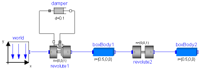
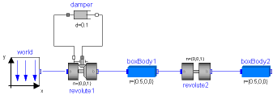
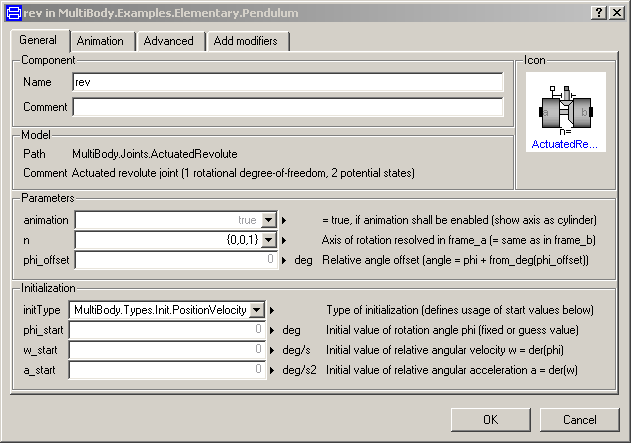

Modelica.Mechanics.MultiBody.UsersGuide.Tutorial
Modelica.Mechanics.MultiBody.UsersGuide.Tutorial
Modelica.Mechanics.MultiBody.UsersGuide.Tutorial
Modelica.Mechanics.MultiBody.UsersGuide.Tutorial
This tutorial provides an introduction into the MultiBody library.
Extends from Modelica.Icons.Information (Icon for general information packages).
| Name | Description |
|---|---|
| Overview of MultiBody library | |
| A first example | |
| Loop structures | |
| Connection of LineForces |
Modelica.Mechanics.MultiBody.UsersGuide.Tutorial.OverViewLibrary MultiBody is a free Modelica package providing 3-dimensional mechanical components to model in a convenient way mechanical systems, such as robots, mechanisms, vehicles. A basic feature is that all components have animation information with appropriate default sizes and colors. A typical screenshot of the animation of a double pendulum is shown in the figure below, together with its schematic.
 

Note, that all components - the coordinate system of the world frame,
the gravity acceleration vector, the revolute joints and the
bodies - are visualized in the animation.
This library replaces the long available ModelicaAdditions.MultiBody
library, since it is much more easier to use and more powerful.
The main features of the library are:
Extends from Modelica.Icons.Information (Icon for general information packages).
Modelica.Mechanics.MultiBody.UsersGuide.Tutorial.FirstExampleAs a first example it shall be demonstrated how to build up, simulate and animate a simple pendulum.
A simple pendulum consisting of a body and a revolute joint with linear damping in the joint, is first build-up as Modelica composition diagram, resulting in:

In the following figure the location of the used model components is shown. Drag these components in the diagram layer and connect them according to the figure:

Every model that uses model components from the MultiBody library must have an instance of the Modelica.Mechanics.MultiBody.World model on highest level. The reason is that in the world object the gravity field is defined (uniform gravity or point gravity), as well as the default sizes of animation shapes and this information is reported to all used components. If the World object is missing, a warning message is printed and an instance of the World object with default settings is automatically utilized (this feature is defined with annotations and is, e.g., supported by Dymola).
In a second step the parameters of the dragged components need to be defined. Some parameters are vectors that have to be defined with respect to a local coordinate system of the corresponding component. The easiest way to perform this is to define a reference configuration of your multi-body model: In this configuration, the relative coordinates of all joints are zero. This means that all coordinate systems on all components are parallel to each other. Therefore, this just means that all vectors are resolved in the world frame in this configuration.
The reference configuration for the simple pendulum shall be defined in the following way: The y-axis of the world frame is directed upwards, i.e., the opposite direction of the gravity acceleration. The x-axis of the world frame is orthogonal to it. The revolute joint is placed in the origin of the world frame. The rotation axis of the revolute joint is directed along the z-axis of the world frame. The body is placed on the x-axis of the world frame (i.e., the rotation angle of the revolute joint is zero, when the body is on the x-axis). In the following figures the definition of this reference configuration is shown in the parameter menus of the revolute joint and the body:


Translate and simulate the model, e.g., with Dymola. Automatically, all defined components are visualized in an animation using default absolute or relative sizes of the components. For example, a body is visualized as a sphere and as a cylinder. The default size of the sphere is defined as parameter in the world object. You may change this size in the "Animation" parameter menu of the body (see parameter menu above). The default size of the cylinder is defined relatively to the size of the sphere (half of the sphere size). With default settings, the following animation is defined:

The world coordinate system is visualized as coordinate system with axes labels. The direction of the gravity acceleration vector is shown as green arrow. The red cylinder represents the rotation axis of the revolute joint and the light blue shapes represent the body. The center of mass of the body is in the middle of the light blue sphere.
Extends from Modelica.Icons.Information (Icon for general information packages).
Modelica.Mechanics.MultiBody.UsersGuide.Tutorial.ConnectionOfLineForcesLine force elements, such as a Spring, are usually connected between two parts. In fact, this is the only possibility in most multi-body programs. In an equation based system like Modelica, more general connections are possible. In particular 3-dimensional line force elements can be connected together in series without having a body with mass at the connection point. This is advantageous since stiff systems can be avoided, say, due to a stiff spring and a small mass at the connection point. For an example, see model ThreeSprings:

Here, three springs are connected together at one point, without having a body at the connection point of the springs. There is one difficulty: In such a situation the orientation object at the connection point is undefined, because the springs do not transmit torques. Translation will therefore fail, if three springs and a body are connected together in this way. To handle such a case, all line force elements have flags "fixedRotationAtFrame_a" and "fixedRotationAtFrame_b" in their "Advanced" parameter menu. For example, if "fixedRotationAtFrame_b = true", the orientation object at frame_b is explicitly set to a null rotation, i.e.,
frame_b.R = Modelica.Mechanics.MultiBody.Frames.nullRotation();
This means that the coordinate system in the connection point of the three springs is always parallel to the world frame. When this option is selected, the corresponding frame in the line force icon is marked with a red circle and with the text "R=0". This is shown in the next figure, where this option is selected for spring3.frame_b:

Note, if this flag is not set to true, a translation error will occur. Due to the usage of overdetermined connectors in the MultiBody library, the error message will be something like: .
"The overdetermined connectors <...> are connected but do not have any root defined"
The two flags "fixedRotationAtFrame_a" and "fixedRotationAtFrame_b must be very carefully set, because a wrong definition can lead to a model that simulates, but the simulation result is wrong. This is the case, whenever the movement of the resulting system depends on the orientation object that was arbitrarily set in parallel to the world frame. A typical example is shown in the next figure:

Here, spring3.frame_b.R is defined to be in parallel to the world frame. However, this is then also the orientation of fixedTranslation.frame_a, and this in turn means that the left part of the fixedTranslation object is always in parallel to the world frame. Since this is not correct, this model will result in a wrong simulation result This system is mathematically not well-defined and does not have a solution. The only way to model such a system is by providing a mass and an inertia tensor to fixedTranslation. Then, the flags are not needed, because the "connection" point of the springs is a body where the absolution position vector and the orientation matrix of the body-fixed coordinate system are used as states.
Extends from Modelica.Icons.Information (Icon for general information packages).
Automatically generated Fri Oct 02 11:08:15 2015.